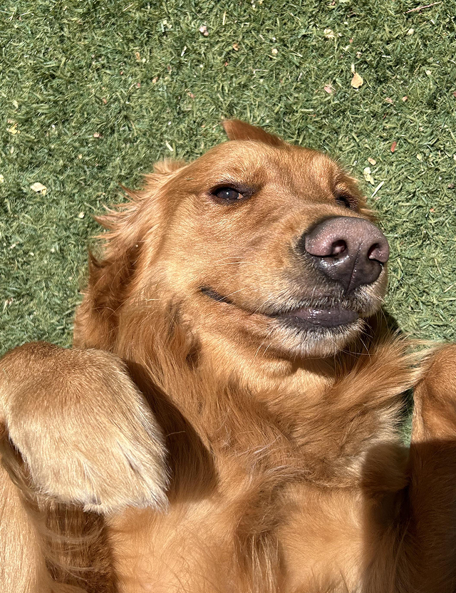

Какая
собака мне
подойдёт?
Выбери собаку не по внешности,
а по характеру, образу жизни и тому,
насколько вам будет комфортно вместе
◷ 5 мин

Перед выбором собаки
Подберите собаку под вашу жизнь
Порода может подсказать типичные потребности, но не предсказать характер конкретной собаки. Начните с времени на прогулки и занятия, условий дома и расходов на уход. Тест поможет сравнить ваши ответы с породными профилями, а эти материалы — разобраться в самом выборе.